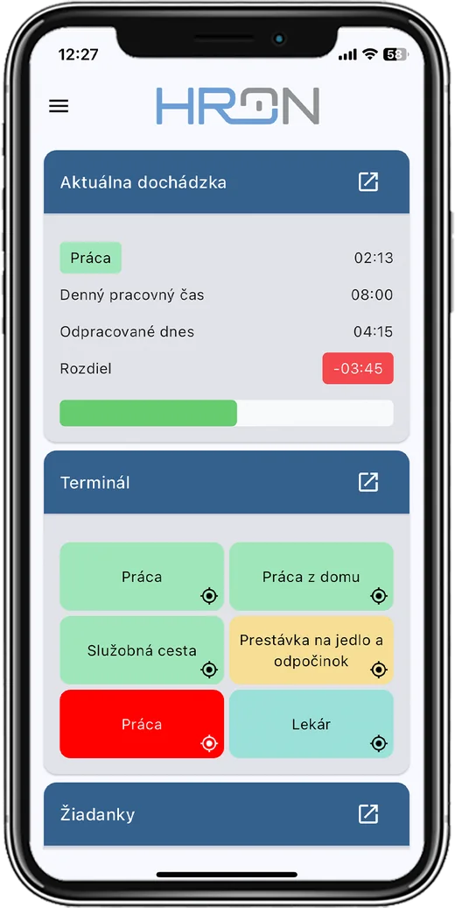
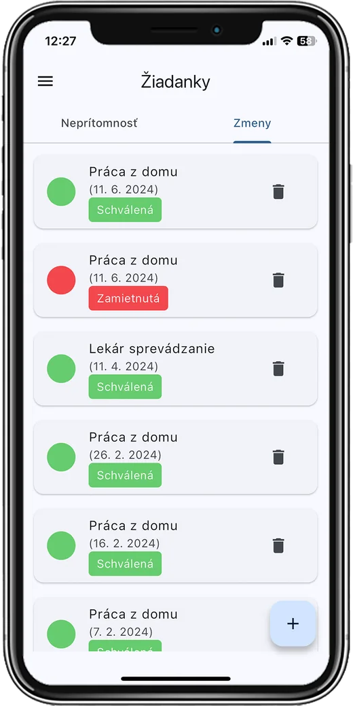

Fewer questions for HR
"How much leave do I have left?" "What happened to my request?" Each employee finds the answer on the web or in the app.
HRON is an attendance system. Your employees record arrivals, departures and leave requests, and you see the whole company in real time.
We wrote HRON for ourselves more than 10 years ago. We are now publishing the code on the H-R-O-N GitHub profile.
"How much leave do I have left?" "What happened to my request?" Each employee finds the answer on the web or in the app.
The mobile app allows you to track the location of each record. You see whether the employee was at the assigned workplace, and you can present the same records at an occupational safety inspection.
Each approver gets an alert, then a reminder while the request is still waiting.
Employees install the app on Android or iOS and use it to:


You create your own leave categories. Employees see their balance and the state of each request.
You export the month's hours to your accounting system.
You see in the calendar who is away today.
Employees clock in with a chip at a physical terminal, or at a virtual one on the web or a phone.
You get each employee's entitlement, worked out from their contracted hours.
You install HRON on desktop and mobile.
You control access with roles (RBAC). Employees reach the company network through EntGuard VPN.
We run HRON on our infrastructure, so you install and maintain nothing. Write to us with your company size and we will reply with the details.
Tell us what you need HRON to do. We read each request and answer with what we can build.